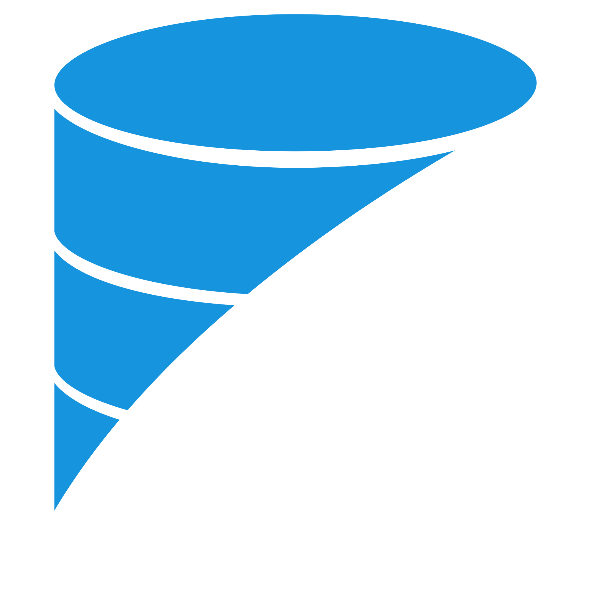

CSharp
Eu uso C# .NET para desenvolver aplicativos Web Api de alta qualidade, graças às suas amplas bibliotecas e frameworks, que permitem desenvolvimento eficiente e escalável.

Banco de Dados
Eu utilizo T-SQL para gerenciar bancos de dados SQL Server, PostgreSQL para projetos de alta disponibilidade e desempenho, e Redis para bancos de dados em memória.

Mensageria
Eu uso o RabbitMQ para sistemas distribuídos, como microsserviços e aplicações em nuvem, enviando e recebendo mensagens de forma confiável, escalável e personalizável.